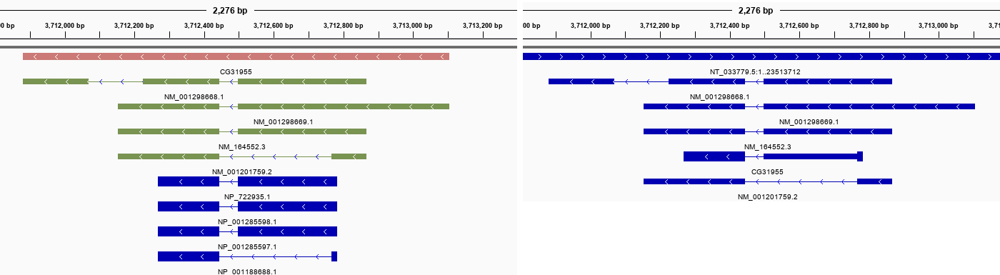

Welcome to bio
The software is currently under development. It is operational but not fully vetted.
bio - command-line utilities to make bioinformatics explorations more enjoyable.
Built on top of BioPython and other existing packages; bio streamlines the tedious bioinformatics tasks such as:
- downloading and storing data
- converting between formats
- extracting a subset of information
- visualizing alignments
- exploring taxonomies
- … and more …
Compare the gene GFF models made with bio (left) to those you download from official sources like NCBI (right):

Having access to all the utility described above makes the bio package well suited for exploratory analysis of genomes. The software was written to teach bioinformatics and is the companion software to the Biostar Handbook
Quick links
- Source code: https://github.com/ialbert/bio
- Use cases: bio_examples.sh
Why do we need this software?
If you’ve ever done bioinformatics you know how even seemingly straightforward tasks require multiple steps, arcane incantations, reading documentation and numerous other preparations that slow down your progress.
Time and again I found myself not pursuing an idea because getting to the fun part was too tedious. The bio package is meant to solve that tedium.
Diving right in
Here is how to align the first 1000 basepairs of SARS-COV-2 versus to the same region of a bat coronavirus:
# Get the data.
bio NC_045512 MN996532 --fetch Align the sequences.
bio NC_045512 MN996532 --align --end 1000 | head
# Ident=969(96.9%) Mis=31(3.1%) Gaps=0(0.0%) Target=(1, 1001) Query=(1, 1001) Length=1,000 Score=4721.0 NUC.4.4(11,1)
MN996532.2 ATTAAAGGTTTATACCTTCCCAGGTAACAAACCAACCAACTTTCGATCTCTTGTAGATCTGTTCTCTAAACGAACTTTAAAATCTGTGTG
||||||||||||||||||.|||||||||||||||||.||||.|||||||||||||||||||||||||||||||||||||||||||||||| 90
NC_045512.2 ATTAAAGGTTTATACCTTTCCAGGTAACAAACCAACGAACTCTCGATCTCTTGTAGATCTGTTCTCTAAACGAACTTTAAAATCTGTGTG
MN996532.2 GCTGTCACTCGGCTGCATGCTTAGTGCACTCACGCAGTATAATTAATAACTAATTACTGTCGTTGACAGGACACGAGTAACTCGTCTATC
.||||||||||||||||||||||||||||||||||||||||||||||||||||||||||||||||||||||||||||||||||.|||||| 180
NC_045512.2 ACTGTCACTCGGCTGCATGCTTAGTGCACTCACGCAGTATAATTAATAACTAATTACTGTCGTTGACAGGACACGAGTAACTCATCTATCthat’s it.
A more realistic example
Suppose you wanted to identify the differences between the S protein of the bat coronavirus deposited as MN996532 and the S protein of the ancestral SARS-COV-2 virus designated by the NCBI via accession number NC_045512.
If you are a trained bioinformatician, think about all the steps you would need to perform to accomplish this task, then think about the effort it would take you to teach someone else how to do the same.
With the bio package the process takes simple, concise steps.
Download and rename
First we download and rename the data keep our sanity:
bio NC_045512 --fetch --rename ncov
bio MN996532 --fetch --rename ratg13From now on bio can operate on NC_045512 using the name ncov and on MN996532 using the name ratg13 no matter where you are on your computer!
Convert to different formats
bio stores data in an internal storage system that it can find from any location. There is no clutter of files or paths to remember. For example, in any directory you now can type:
bio ncov --fasta --end 100and it will show you the first 100 bases of the genome
>ncov Severe acute respiratory syndrome coronavirus 2 isolate Wuhan-Hu-1, complete genome
ATTAAAGGTTTATACCTTCCCAGGTAACAAACCAACCAACTTTCGATCTCTTGTAGATCT
GTTCTCTAAACGAACTTTAAAATCTGTGTGGCTGTCACTCYou could also convert the data stored under ncov name to other formats. Let’s convert features with type CDS to GFF:
bio ncov --gff --type CDS | head -5##gff-version 3
NC_045512.2 . CDS 266 13468 . + . ID=CDS-1;Parent=YP_009724389.1;Name=YP_009724389.1;gene=ORF1ab;locus_tag=GU280_gp01;ribosomal_slippage=;note=pp1ab; translated by -1 ribosomal frameshift;codon_start=1;product=ORF1ab polyprotein;protein_id=YP_009724389.1;db_xref=GeneID:43740578;gene_id=GU280_gp01
NC_045512.2 . CDS 13468 21555 . + . ID=CDS-2;Parent=YP_009724389.1;Name=YP_009724389.1;gene=ORF1ab;locus_tag=GU280_gp01;ribosomal_slippage=;note=pp1ab; translated by -1 ribosomal frameshift;codon_start=1;product=ORF1ab polyprotein;protein_id=YP_009724389.1;db_xref=GeneID:43740578;gene_id=GU280_gp01
NC_045512.2 . CDS 266 13483 . + . ID=CDS-3;Parent=YP_009725295.1;Name=YP_009725295.1;gene=ORF1ab;locus_tag=GU280_gp01;note=pp1a;codon_start=1;product=ORF1a polyprotein;protein_id=YP_009725295.1;db_xref=GeneID:43740578;gene_id=GU280_gp01
NC_045512.2 . CDS 21563 25384 . + . ID=CDS-4;Parent=YP_009724390.1;Name=YP_009724390.1;gene=S;locus_tag=GU280_gp02;gene_synonym=spike glycoprotein;note=structural protein; spike protein;codon_start=1;product=surface glycoprotein;protein_id=YP_009724390.1;db_xref=GeneID:43740568;gene_id=GU280_gp02Align nucleotides or peptides
Now, back to our problem of aligning proteins. Let’s align the first 90 basepairs of DNA sequences for the S protein for each organism, bio even gives you a shortcut, instead of typing --gene S --type CDS you can write it as ncov:S :
bio ncov:S ratg13:S --end 60 --align
# Ident=57(95.0%) Mis=3(5.0%) Gaps=0(0.0%) Target=(1, 61) Query=(1, 61) Length=60 Score=273.0 NUC.4.4(11,1)
QHR63300.2 ATGTTTGTTTTTCTTGTTTTATTGCCACTAGTCTCTAGTCAGTGTGTTAATCTTACAACC
||||||||||||||||||||||||||||||||.||||||||||||||||||||.|||||. 60
YP_009724390 ATGTTTGTTTTTCTTGTTTTATTGCCACTAGTTTCTAGTCAGTGTGTTAATCTAACAACTWe can visualize the translation of the DNA into aminoacids with one letter (-1) or three letter codes (-3):
bio ncov:S ratg13:S --end 60 --align -1
# Ident=57(95.0%) Mis=3(5.0%) Gaps=0(0.0%) Target=(1, 61) Query=(1, 61) Length=60 Score=273.0 NUC.4.4(11,1)
M F V F L V L L P L V S S Q C V N L T T
QHR63300.2 ATGTTTGTTTTTCTTGTTTTATTGCCACTAGTCTCTAGTCAGTGTGTTAATCTTACAACC
||||||||||||||||||||||||||||||||.||||||||||||||||||||.|||||. 60
YP_009724390 ATGTTTGTTTTTCTTGTTTTATTGCCACTAGTTTCTAGTCAGTGTGTTAATCTAACAACT
M F V F L V L L P L V S S Q C V N L T T If instead we wanted to align the 60bp DNA subsesequences for S protein after their translation into proteins we could do it like so:
bio ncov:S ratg13:S --translate --end 60 --align
# Ident=20(100.0%) Mis=0(0.0%) Gaps=0(0.0%) Target=(1, 21) Query=(1, 21) Length=20 Score=98.0 BLOSUM62(11,1)
QHR63300.2 MFVFLVLLPLVSSQCVNLTT
|||||||||||||||||||| 20
YP_009724390 MFVFLVLLPLVSSQCVNLTTWe can note right away that all differences in the first 60bp of DNA are synonymous substitutions, the protein translations are the same.
Look up the taxonomy
Then additional data source can be fully integrated. Finding the lineage of the organism is as simple as:
bio ncov --taxon --lineagesuperkingdom, Viruses, 10239
clade, Riboviria, 2559587
kingdom, Orthornavirae, 2732396
phylum, Pisuviricota, 2732408
class, Pisoniviricetes, 2732506
order, Nidovirales, 76804
suborder, Cornidovirineae, 2499399
family, Coronaviridae, 11118
subfamily, Orthocoronavirinae, 2501931
genus, Betacoronavirus, 694002
subgenus, Sarbecovirus, 2509511
species, Severe acute respiratory syndrome-related coronavirus, 694009
no rank, Severe acute respiratory syndrome coronavirus 2, 2697049See the bioproject
bio knows about bioprojects and sequencing data, what is stored in the SRA about our data?
As it turns out the data for ncov data is not properly cross-referenced at NCBI … thus we can’t quite get the SRR run numbers automatically.
Let’s pick another data that has better cross references, perhaps a virus from the 2014 Ebola outbreak:
bio KM233118 --fetch --rename ebola14and now print:
bio ebola14 --sra ebola14 BioProject PRJNA257197
ebola14 BioSample SAMN02952049if we wanted the SRR run numbers we could run:
bio ebola14 --sra --sampleto get:
[
{
"Run": "SRR1553609",
"ReleaseDate": "2014-08-19 11:41:53",
"LoadDate": "2014-08-19 11:18:49",
"spots": "464802",
"bases": "93890004",
"spots_with_mates": "464802",
"avgLength": "202",
"size_MB": "51",
"download_path": "https://sra-downloadb.be-md.ncbi.nlm.nih.gov/sos1/sra-pub-run-5/SRR1553609/SRR1553609.1",
"Experiment": "SRX674271",
"LibraryName": "NM042.3.FCH9",
"LibraryStrategy": "RNA-Seq",
"LibrarySelection": "cDNA",
"LibrarySource": "TRANSCRIPTOMIC",
"LibraryLayout": "PAIRED",
...
bio is a data model
Beyond the functionality that we show, bio is also an exploration into modeling biological data. The current standards and practices are woefully antiquated and painfully inadequate, the default formats at GenBank or EMBL are dishearteningly inefficient, and depressingly tedious to program with.
In contrast, take a look under the hood, in bio all data are in a simple, efficient, quick to load, compressed in JSON format.
bio ncov | head -20[
{
"id": "NC_045512.2",
"definition": "Severe acute respiratory syndrome coronavirus 2 isolate Wuhan-Hu-1, complete genome",
"dblink": [
"BioProject:PRJNA485481"
],
"locus": "NC_045512",
"feature_count": 57,
"origin_len": 29903,
"molecule_type": "ss-RNA",
"topology": "linear",
"data_file_division": "VRL",
"date": "18-JUL-2020",
"accessions": [
"NC_045512"
],
"sequence_version": 2,
"keywords": [
"RefSeq"The data layout allows bio to read in the entire human chromosome 1, with its 253 million characters and 328 thousand genomic features, in just three(!) seconds. In another 3 seconds bio can convert that information fasta or gff, it can filter it by type, translate the sequence, extract proteins, slice by coordinate etc:
time bio chr1 --fasta | wc -c
253105766
real 0m6.238s
user 0m4.156s
sys 0m2.172sFor shorter genomes, bacterial or viral the conversion times are under a fraction of a second.
Thanks to the representation it is trivially easy to extend bio. The data is already structured in an efficient layout that needs no additional parsing to load.
What does bio do?
- fetches the data from NCBI
- creates a more efficient local representation the data
- stores this representation so that next time you need it is available much faster
- generates alignments
But wait there is more
How about translating the reverse of the last 10 nucleotides of every feature labeled as CDS. bio can do that, just keep adding parameters :-) :
bio ncov --fasta --type CDS --start -10 --reverse --translateah yes, if that is what you needed, here it is:
>YP_009724389.1 [-9:21291], reverse, translated DNA
NQQ
>YP_009725295.1 [-9:13218], reverse, translated DNA
NVA
>YP_009724390.1 [-9:3822], reverse, translated DNA
NTH
...And so on. bio has a wealth of utility that makes bioinformatics more accessible.
Comparisons to EMBOSS
The software with the most similar goals to bio is the emboss suite, a revolutionary software package developed decades ahead of its time. Unfortunately, perhaps because of being developed so early on, the amazing feats of software engineering within emboss are deployed with a nearly incomprehensible documentation that attempts, in vain, to describe an incredibly obtuse command interface.
We love the concept of emboss but even after many years we don’t understand how to use it. We constantly have to consult the manual for details. Moreover commands that use emboss suites tend to end up as a series of hard to read arcane commands that are surprisingly difficult to comprehend even for experienced scientists.
Criticism aside, imitation is the greatest form of flattery, bio is an homage to emboss with the hope that one day, we can replace some functionality from emboss with code that brings joy rather than frustrations.